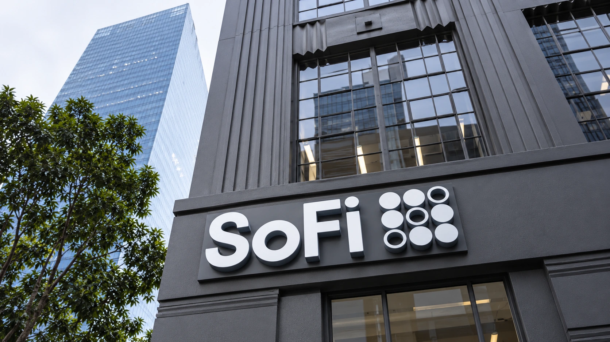

SoFi Raises Its Outlook as Quarterly Profit Climbs to $241 Million
The digital lender reported 44% revenue growth and outlined a larger business for 2027. Credit quality and the cost of funding remain central to that expansion.

SoFi Technologies raised its annual outlook on Tuesday after third-quarter net income reached $241 million, up 73% from a year earlier. The digital financial-services company is expanding its lending and customer relationships while trying to turn that larger business into sustained earnings. Its new forecast also gives shareholders an early benchmark for growth next year.
The company reported GAAP net revenue of $1.385 billion and adjusted net revenue of $1.371 billion, both up 44%. Diluted earnings were 18 cents a share. Those closely rounded revenue figures describe different accounting measures, even though both can be summarized as roughly $1.4 billion. Adjusted results should be compared with adjusted expectations rather than substituted silently for the financial statements.
Reuters reported that adjusted revenue exceeded the $1.25 billion consensus compiled by LSEG. It put the new annual revenue forecast above analysts' $4.87 billion expectation. The comparison helps explain the positive initial market reception, but an earnings beat answers a narrower question than whether the company's growth will remain profitable through a full credit cycle.
More customers, and a bigger relationship with each
The Wall Street Journal reported that SoFi added a record 1.2 million members, taking the total to 17.1 million, a 35% annual increase. A larger membership provides more opportunities to offer saving, borrowing and investing services. It does not mean each member uses every product, or that every account contributes the same amount of revenue.
For a digital lender, the economics depend on what happens after a customer joins. A relationship that produces regular deposits and several useful services can spread acquisition and servicing costs across more activity. An account opened for a single incentive or a short-lived borrowing need may produce a different return. Membership growth therefore needs to be read alongside usage, revenue and expenses.
SoFi's consumer-facing platform and its technology services also serve different customers. The latter supplies infrastructure to other businesses. Combining all activity into a single user-growth story would obscure the distinction between attracting an individual depositor and winning or retaining a large corporate client. Each business has its own sales cycle, concentration exposure and demands on investment.
Lending growth brings a second balance sheet test
SoFi reported $16.9 billion of total loan originations, including $3.8 billion generated through its Loan Platform Business. That platform activity involves originating loans for third parties and referrals; it should not all be treated as lending retained on SoFi's own balance sheet. Origination volume, recognized revenue and the amount of credit risk held are separate measures.
This distinction matters when comparing a lender with a software company. Software revenue can expand without funding an equivalent amount of customer borrowing. A retained loan needs financing and exposes the holder to the borrower's ability to repay. Selling or arranging loans changes the distribution of those obligations, although it still requires buyers, operational controls and reliable underwriting.
Our coverage of bank earnings explains why funding and credit deserve attention alongside headline revenue. Lower funding costs can support lending margins, while unexpected defaults can consume income earned earlier. Fast growth makes it especially useful to follow how different groups of loans perform as they age, rather than judging the entire portfolio from new production alone.
The 2027 forecast raises expectations, too
Management now projects $5.04 billion in adjusted net revenue and 61 cents of adjusted earnings per share for 2026. Its initial 2027 outlook calls for $6.4 billion of adjusted revenue and 90 cents a share. Those are company forecasts, not booked income. The revenue target implies roughly 27% growth next year, compared with about 40% in this year's outlook.
A slower growth percentage can accompany a larger absolute addition to revenue as the starting base expands. What matters for shareholders is the income retained after funding, servicing, marketing and credit costs. Our cash flow explainer also shows why accounting earnings and immediately available cash do not move in lockstep. SoFi's next reports will show how much of its expanding customer base translates into durable returns, and whether execution matches the higher expectations now built into management's forecast.
Sources and methodology
Sources checked October 27, 2026. Company statements, reported findings and forecasts are attributed in the text. Financial and operational implications are editorial analysis.